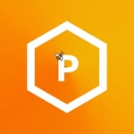

Koronatech · Караганда
Задачи: Сбор, анализ и согласование требований с заказчиком; Формализация требований, подготовка технических заданий и аналитических артефактов; Коммуникация с заказчиком, дизайнерами и командой разработки; …
Откликнуться →
Каждый день сюда приходят свежие вакансии: продукт и аналитика. Казахстан и удалёнка. Источники: hh.kz, Enbek.kz, LinkedIn и Telegram-каналы с вакансиями.
Koronatech · Караганда
Задачи: Сбор, анализ и согласование требований с заказчиком; Формализация требований, подготовка технических заданий и аналитических артефактов; Коммуникация с заказчиком, дизайнерами и командой разработки; …
Откликнуться →ТОО "Spark Digital" · г. Алматы, Алатауский район
Откликнуться →Higgsfield AI · Алматы, Алматы, Казахстан
Откликнуться →ТОО "Freedom Lab" · г. Астана, район Есиль
Откликнуться →Kaspi.kz · Алматы
В поиске Product Manager'a Рекомендательных систем. Главная задача: Увеличивать корзину и дополнительные продажи за счёт персонализации: знать клиента, правильно оценивать каждый товар и показывать клиенту…
Откликнуться →Senim Doors · Астана · 300 000 ₸
Откройте для себя возможности роли Продакт менеджера, где вы сможете влиять на развитие продуктов и воплощать идеи в жизнь. Обязанности Анализ рынка и потребностей клиентов Обязанности по продакт менеджеру: - работа с…
Откликнуться →TownLive Games · Астана
Запускаем AI-продукты для международного рынка. Ищем самостоятельного Product Manager, который умеет находить продуктовые возможности, расставлять приоритеты, быстро запускать решения и отвечать за результат после…
Откликнуться →DauInvest · Астана · 700 000 ₸
Мы ищем не просто продакта - мы ищем человека, который хочет построить единорога. TrustMe - удобный сервис для онлайн-подписания документов, который помогает тысячам предпринимателей вести бизнес быстрее и проще. …
Откликнуться →ALSECO, АО · Алматы
АО «АЛСЕКО» ищет Менеджера продукта для развития цифровой платформы и входящих в неё мобильных приложений, веб-сервисов и интеграционных решений. Нам нужен человек, который возьмёт на себя управление развитием…
Откликнуться →Abbott · Алматы
As the Product manager of OTX drugs, you’ll have the chance to develop annual marketing plans and coordinate their successful implementation and to grow the long term sales, profit and market share position for assigned…
Откликнуться →Networks Energy · Астана
Опыт работы: от 3–5 лет в роли Product Owner / Product Manager в IT-проектах. Понимание архитектуры ПО. Знание методологий: Agile (Scrum, Kanban), Lean, SAFe (желательно). Навыки управления требованиями: сбор, анализ,…
Откликнуться →Epiroc · Астана, Астана, Казахстан
Откликнуться →Playrix · Казахстан
Откликнуться →Исламский Банк ADCB · Алматы
Product Manager, Product and Channels Division, Corporate Banking Department ОБЯЗАННОСТИ: Управление продуктовой линейкой: Совершенствование и актуализация действующих продуктов для корпоративных и private banking…
Откликнуться →Kolesa (АО Колеса) · Алматы · 1 750 000 ₸
Kolesa Group — международная IT‑компания, строим классифайды для миллионов пользователей. Наши продукты — kolesa.kz | krisha.kz | avtoelon.uz — помогают людям и бизнесам продавать и покупать авто, недвижимость, товары и…
Откликнуться →KAZPARTS, ТОО · Алматы
Ищем менеджера, который возьмёт под управление категорию автозапчастей и шин и превратит её в драйвер роста розницы. Задача Не просто управлять ассортиментом, а строить сильный розничный продукт: понимать клиента,…
Откликнуться →Pixel Chain · Астана, Астана, Казахстан
Откликнуться →PRODUCT DESIGNER WANTED Привет! Ищу сильного дизайнера продукта, который возьмёт на себя весь пассажирский опыт: от первого запуска приложения до завершения поездки. Мы развиваем сервис для заказа такси, междугородних…
Откликнуться →Product Designer (B2B) Более 400 миллионов пользователей выбирают технологии Лаборатории Касперского для защиты своих данных, а мы каждый день работаем над их совершенствованием. Наша задача — обеспечить безопасность…
Откликнуться →18 $
Product Designer Tabby creates financial freedom in the way people shop, earn and save by reshaping their relationship with money. Over 25 million users choose Tabby to stay in control of their spending and make the…
Откликнуться →Higgsfield AI · Алматы, Алматы, Казахстан
Откликнуться → #ищу #продактменеджер #гибрид Ищут продакт-менеджера Подробнее: Менеджер по развитию продукта / Product manager (e-commerce) Компания : Simple group Формат работы : Москва, гибрид ЗП : обсуждается с успешным…
Откликнуться →